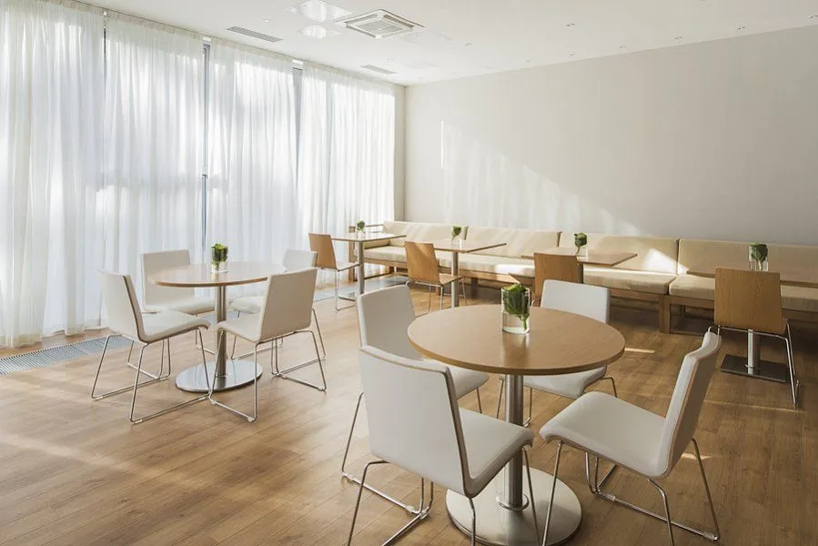
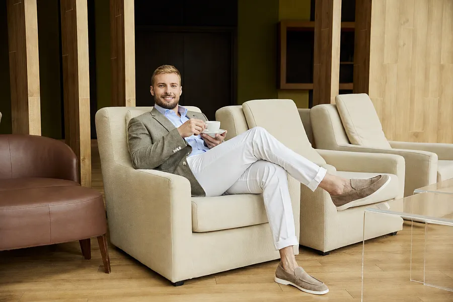
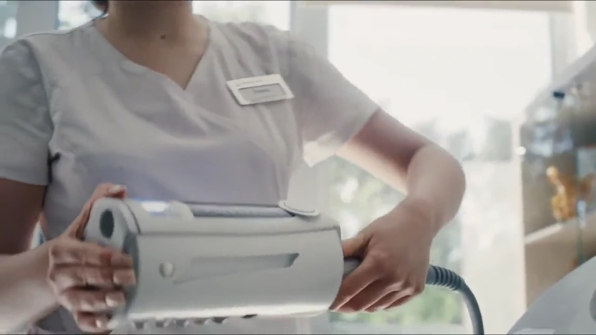
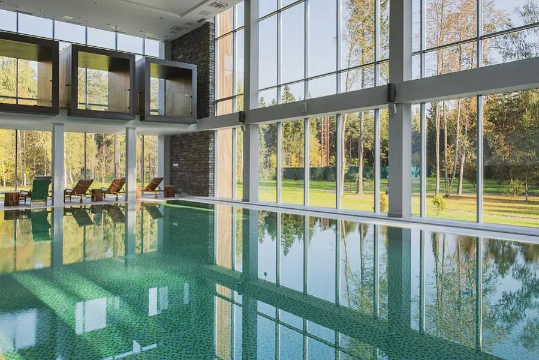
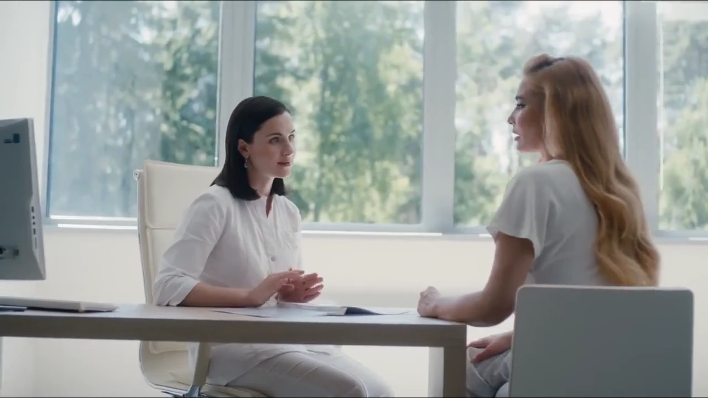

VERBA
Медицина.Природа.Вы.
Персональное здоровье начинается с внимания к человеку. В окружении, которое помогает услышать себя.
ВАШ МАРШРУТ В VERBA
Питание по методу Майера. Ментальное здоровье. Эстетический уход. SPA.
Выбрать направление



ЧЕТЫРЕ НАПРАВЛЕНИЯ
Какой ритм
нужен вам?
Лёгкость начинается изнутри.
Питание и привычки по методу Майера. Внимательный медицинский подход к пищеварению и вашему самочувствию.
Программа, длительность и противопоказания обсуждаются с врачом.
Выбрано направление MAYR
Начинаем
с врача.

Внимание к вашей истории.
Консультация, диагностика по показаниям и индивидуальный план.
Понять ваш запрос
Самочувствие, привычки и личные цели — в разговоре с врачом.
Увидеть картину целиком
Собственная диагностическая база. Обследования по показаниям.
Найти ваш маршрут
Индивидуальный подход к питанию, восстановлению и дальнейшим шагам.
СОСНОВЫЙ БОР · 20 КМ ОТ МОСКВЫ
Вернуться
к своему ритму.
Природа вокруг.
Внимание к вам.
Лесная сцена. Видео проигрывается один раз.
Перед первым шагом.
Как выбрать направление?
Начните с вашей цели. Окончательный состав программы и противопоказания обсуждаются с врачом. Подбор в демоверсии помогает сформулировать запрос и не является медицинской рекомендацией.
На сколько дней приезжать?
На официальном сайте указаны программы от трёх до четырнадцати дней с возможностью продления. Длительность конкретной программы определяется индивидуально.
Где находится VERBA?
Московская область, Пушкино, улица Зелёная роща, строение 17.